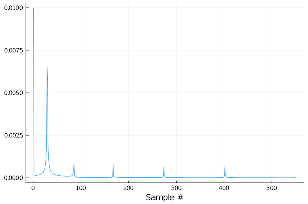

Propagation modeling toolkit
Overview
The underwater acoustic propagation modeling & simulation toolkit provides a framework for modeling and simulating underwater acoustic environments with multiple sources and receivers. The toolkit provides a pluggable interface that allows different propagation models to be used with the same scene description. While UnderwaterAcoustics.jl provides several propagation model implementations that can be used out-of-the-box, the interface is designed to allow third party propagation models to be easily plugged in to the toolkit as well.
Available models:
| Model | Description | Language | Strengths | Limitations |
|---|---|---|---|---|
| PekerisRayModel | Analytical ray model for Pekeris waveguides | Julia | Fast, differentiable, multi-threaded | Isovelocity, range independent |
| RaySolver | Ray/Gaussian beam model | Julia | Differentiable, multi-threaded | Tell us and we'll fix them! |
| Bellhop | Interface to OALIB Bellhop model | FORTRAN | Well established benchmark model | Does not support automatic differentiation |
| Kraken | Interface to OALIB Kraken model | FORTRAN | Well established benchmark model | Does not support automatic differentiation |
Quickstart guide
Let's get started:
julia> using UnderwaterAcousticsDefine an environment
First, let's setup an environment description.
julia> env = UnderwaterEnvironment()
BasicUnderwaterEnvironment:
altimetry = FlatSurface()
bathymetry = ConstantDepth{Float64}(20.0)
ssp = IsoSSP{Float64}(1539.0866009307247)
salinity = 35.0
seasurface = SurfaceLoss{Float64}(2.6)
seabed = RayleighReflectionCoef{Float64,Float64,Float64}(1.169, 0.9999, 0.01261)
noise = RedGaussianNoise{Float64}(1.0e6)Environments are immutable, so you have to customize them during construction. For example:
julia> env = UnderwaterEnvironment(
seasurface = Vacuum,
seabed = SandyClay,
ssp = SampledSSP(0.0:20.0:40.0, [1500.0, 1490.0, 1520.0], :smooth),
bathymetry = ConstantDepth(40.0)
)
BasicUnderwaterEnvironment:
altimetry = FlatSurface()
bathymetry = ConstantDepth{Float64}(40.0)
ssp = SampledSSP{Float64,Float64,linear}(3 points)
salinity = 35.0
seasurface = ReflectionCoef{Float64}(-1.0)
seabed = RayleighReflectionCoef{Float64,Float64,Float64}(1.147, 0.9849, 0.00242)
noise = RedGaussianNoise{Float64}(1.0e6)If you have Plots.jl installed, you can use plot recipes to plot the environment or the soundspeed profile. For example:
julia> using Plots
julia> plot(ssp(env))
Selecting a model
Once you have an environment, you need to select a propagation model. To get a list of all available models:
julia> models()
3-element Array{Any,1}:
PekerisRayModel
RaySolver
BellhopNOTE: Bellhop will only be available if you have a working copy of OALIB bellhop.exe available on your PATH.
Once you have an environment, you can select a model that can work with that environment:
julia> models(env)
2-element Array{Any,1}:
RaySolver
BellhopIn this case, we got a shorter list back because the PekerisRayModel can't deal with non-isovelocity SSP. We can confirm this by creating an iso-velocity environment:
julia> env = UnderwaterEnvironment()
BasicUnderwaterEnvironment:
altimetry = FlatSurface()
bathymetry = ConstantDepth{Float64}(20.0)
ssp = IsoSSP{Float64}(1539.0866009307247)
salinity = 35.0
seasurface = SurfaceLoss{Float64}(2.6)
seabed = RayleighReflectionCoef{Float64,Float64,Float64}(1.169, 0.9999, 0.01261)
noise = RedGaussianNoise{Float64}(1.0e6)
julia> models(env)
2-element Array{Any,1}:
PekerisRayModel
RaySolverThis time you see that Bellhop wasn't included, as it assumes a Vacuum surface by default and we have a SeaState1 surface as our default.
Let's pick a 7-ray Pakeris ray model for now:
julia> pm = PekerisRayModel(env, 7)
PekerisRayModel with BasicUnderwaterEnvironment:
altimetry = FlatSurface()
bathymetry = ConstantDepth{Float64}(20.0)
ssp = IsoSSP{Float64}(1539.0866009307247)
salinity = 35.0
seasurface = SurfaceLoss{Float64}(2.6)
seabed = RayleighReflectionCoef{Float64,Float64,Float64}(1.169, 0.9999, 0.01261)
noise = RedGaussianNoise{Float64}(1.0e6)If you wanted the ray solver instead, you'd do pm = RaySolver(env), or for a Bellhop model, you'd do pm = Bellhop(env). Both models can take additional keyword parameters that can customize the solver.
Defining sources and receivers
Now, we need a source and a receiver:
julia> tx = AcousticSource(0.0, -5.0, 1000.0);
julia> rx = AcousticReceiver(100.0, -10.0);This defines an omnidirectional 1 kHz transmitter tx at a depth of 5 m at the origin, and an omnidirectional receiver at a range of 100 m and a depth of 10 m.
NOTE: All coordinates are specified in meters as (x, y, z) for 3D or (x, z) for 2D. The coordinate system has x and y axis in the horizontal plane, and z axis pointing upwards, with the nominal water surface being at 0 m. This means that all z coordinates in water are negative.
Ray tracing
Now that we have an environment, a propation model, a transmitter and a receiver, we can modeling. First, we ask for all eigenrays between the transmitter and receiver:
julia> r = eigenrays(pm, tx, rx)
7-element Array{UnderwaterAcoustics.RayArrival{Float64,Float64},1}:
∠ -2.9° 0↑ 0↓ ∠ 2.9° | 65.05 ms | -40.0 dB ϕ -0.0° ⤷
∠ 8.5° 1↑ 0↓ ∠ 8.5° | 65.70 ms | -40.1 dB ϕ-180.0° ⤷
∠-14.0° 0↑ 1↓ ∠-14.0° | 66.97 ms | -59.0 dB ϕ 60.5° ⤷
∠ 19.3° 1↑ 1↓ ∠-19.3° | 68.84 ms | -61.3 dB ϕ-141.7° ⤷
∠-24.2° 1↑ 1↓ ∠ 24.2° | 71.25 ms | -62.3 dB ϕ-153.8° ⤷
∠ 28.8° 2↑ 1↓ ∠ 28.8° | 74.15 ms | -63.0 dB ϕ 19.4° ⤷
∠-33.0° 1↑ 2↓ ∠-33.0° | 77.49 ms | -85.4 dB ϕ-149.4° ⤷For each eigenray, this shows us the launch angle, number of surface bounces, number of bottom bounces, arrival angle, travel time, transmission loss along that ray, and phase change. The last "⤷" symbol indicates that the complete ray path is also available. We can plot the ray paths:
julia> plot(env; sources=[tx], receivers=[rx], rays=r)
Th red star is the transmitter and the blue circle is the receiver. The stronger eigenrays are shown in blue, while the weaker ones are shown in red.
We might sometimes want to see all rays from the transmitter at certain angular spacing (-45°:5°:45°) and a given range (100 m):
julia> r = rays(pm, tx, -45°:5°:45°, 100.0)
19-element Array{UnderwaterAcoustics.RayArrival{Float64,Float64},1}:
∠-45.0° 2↑ 3↓ ∠-45.0° | 91.89 ms | -109.6 dB ϕ 27.5° ⤷
∠-40.0° 2↑ 2↓ ∠ 40.0° | 84.82 ms | -86.8 dB ϕ 22.1° ⤷
∠-35.0° 1↑ 2↓ ∠-35.0° | 79.32 ms | -85.9 dB ϕ-152.3° ⤷
∠-30.0° 1↑ 2↓ ∠-30.0° | 75.03 ms | -85.2 dB ϕ-143.9° ⤷
∠-25.0° 1↑ 1↓ ∠ 25.0° | 71.69 ms | -62.8 dB ϕ-155.2° ⤷
∠-20.0° 1↑ 1↓ ∠ 20.0° | 69.14 ms | -61.9 dB ϕ-143.9° ⤷
∠-15.0° 0↑ 1↓ ∠-15.0° | 67.27 ms | -59.6 dB ϕ 55.5° ⤷
⋮
∠ 15.0° 1↑ 1↓ ∠-15.0° | 67.27 ms | -60.0 dB ϕ-124.5° ⤷
∠ 20.0° 1↑ 1↓ ∠-20.0° | 69.14 ms | -61.9 dB ϕ-143.9° ⤷
∠ 25.0° 2↑ 1↓ ∠ 25.0° | 71.69 ms | -63.1 dB ϕ 24.8° ⤷
∠ 30.0° 2↑ 1↓ ∠ 30.0° | 75.03 ms | -63.6 dB ϕ 18.1° ⤷
∠ 35.0° 2↑ 2↓ ∠-35.0° | 79.32 ms | -86.2 dB ϕ 27.7° ⤷
∠ 40.0° 2↑ 2↓ ∠-40.0° | 84.82 ms | -86.8 dB ϕ 22.1° ⤷
∠ 45.0° 3↑ 2↓ ∠ 45.0° | 91.89 ms | -87.7 dB ϕ-161.7° ⤷
julia> plot(env; sources=[tx], rays=r)
Arrivals & transmission loss
Often, we are interested in the arrival structure or transmission loss at a receiver. Getting the arrivals is quite similar to getting eigenrays, but the ray paths are not stored:
julia> a = arrivals(pm, tx, rx)
7-element Array{UnderwaterAcoustics.RayArrival{Float64,Missing},1}:
∠ -2.9° 0↑ 0↓ ∠ 2.9° | 65.05 ms | -40.0 dB ϕ -0.0°
∠ 8.5° 1↑ 0↓ ∠ 8.5° | 65.70 ms | -40.1 dB ϕ-180.0°
∠-14.0° 0↑ 1↓ ∠-14.0° | 66.97 ms | -59.0 dB ϕ 60.5°
∠ 19.3° 1↑ 1↓ ∠-19.3° | 68.84 ms | -61.3 dB ϕ-141.7°
∠-24.2° 1↑ 1↓ ∠ 24.2° | 71.25 ms | -62.3 dB ϕ-153.8°
∠ 28.8° 2↑ 1↓ ∠ 28.8° | 74.15 ms | -63.0 dB ϕ 19.4°
∠-33.0° 1↑ 2↓ ∠-33.0° | 77.49 ms | -85.4 dB ϕ-149.4°If we prefer, we can plot these arrivals as an impulse response (sampled at 44.1 kSa/s, in this case):
julia> plot(abs.(impulseresponse(a, 44100; reltime=true)); xlabel="Sample #", legend=false)
The reltime=true option generates an impulse response with time relative to the first arrival (default is relative to transmission time).
If we want, we can also get the complex transfer coefficient or the transmission loss in dB:
julia> transfercoef(pm, tx, rx)
0.013183979186458052 - 0.012267750240848727im
julia> transmissionloss(pm, tx, rx)
34.89032959932541You can also pass in arrays of sources and receivers, if you want many transmission losses to be computed simultanously. Some models are able to compute transmission loss on a Cartesion grid very efficiently. This is useful to plot transmission loss as a function of space.
To define a 1000×200 Cartesion grid with 0.1 m spacing:
julia> rx = AcousticReceiverGrid2D(1.0, 0.1, 1000, -20.0, 0.1, 200)
1000×200 AcousticReceiverGrid2D{Float64}:
BasicAcousticReceiver((1.0, 0.0, -20.0)) … BasicAcousticReceiver((1.0, 0.0, -0.1))
BasicAcousticReceiver((1.1, 0.0, -20.0)) BasicAcousticReceiver((1.1, 0.0, -0.1))
BasicAcousticReceiver((1.2, 0.0, -20.0)) BasicAcousticReceiver((1.2, 0.0, -0.1))
⋮ ⋱
BasicAcousticReceiver((100.7, 0.0, -20.0)) BasicAcousticReceiver((100.7, 0.0, -0.1))
BasicAcousticReceiver((100.8, 0.0, -20.0)) BasicAcousticReceiver((100.8, 0.0, -0.1))
BasicAcousticReceiver((100.9, 0.0, -20.0)) BasicAcousticReceiver((100.9, 0.0, -0.1))We can then compute the transmission loss over the grid:
julia> x = transmissionloss(pm, tx, rx)
1000×200 Array{Float64,2}:
19.0129 19.12 19.5288 … 9.02602 8.23644 8.86055 11.1436 16.4536
19.017 19.1239 19.5324 9.02506 8.26487 8.90641 11.2 16.5155
19.0217 19.1284 19.5366 … 9.02392 8.29514 8.95536 11.2602 16.5817
19.0271 19.1336 19.5415 9.0226 8.32706 9.00713 11.3239 16.6519
⋮ ⋮ ⋱ ⋮ ⋮
35.5238 35.4909 35.4954 56.1556 57.7909 59.9858 63.1631 68.5643
35.5742 35.5448 35.5526 … 56.5185 58.1488 60.3365 63.5039 68.8852
35.6261 35.6 35.611 56.8971 58.522 60.7023 63.8594 69.2206
35.6793 35.6565 35.6704 57.2926 58.9118 61.0841 64.2306 69.5712
julia> plot(env; receivers=rx, transmissionloss=x)
Acoustic simulations
Apart from propagation modeling, we can also setup a simulation with various sources and receviers.
We demonstrate this by setting up a scenario with two pingers (1 kHz, 10 ms pulse with 1 Hz PRR; 2 kHz, 20 ms pulse with 2 Hz PRR) with a source level of 170 dB re µPa @ 1m, at two locations, and deploying two omnidirectional receviers to record them:
julia> using DSP: db2amp
julia> tx = [
Pinger(0.0, 0.0, -5.0, 1000.0; interval=1.0, duration=10e-3, sourcelevel=db2amp(170)),
Pinger(0.0, 100.0, -5.0, 2000.0; interval=0.5, duration=20e-3, sourcelevel=db2amp(170))
]
julia> rx = [
AcousticReceiver(100.0, 0.0, -10.0);
AcousticReceiver(50.0, 20.0, -5.0)
];To carry out the simulation, we can for a 2-second long recording (at 8 kSa/s) at the receivers:
julia> s = record(pm, tx, rx, 2.0, 8000.0)
SampledSignal @ 8000.0 Hz, 16000×2 Array{Complex{Float64},2}:
127308.0+884666.0im 1.15927e6-548579.0im
-263820.0+1.16962e6im 1.1377e6+541803.0im
-80980.6+1.16562e6im 657226.0+738712.0im
⋮
-447370.0+910253.0im 163952.0-436691.0im
-431239.0+903852.0im 100509.0-118066.0im
-391797.0+582705.0im 49383.0-679981.0imThe signals are returned as complex analytic signals, but can be easily converted to real signals, if desired:
julia> s = real(s)
SampledSignal @ 8000.0 Hz, 16000×2 Array{Float64,2}:
-672702.0 318731.0
-825049.0 377382.0
-984626.0 214490.0
⋮
66193.3 -497239.0
-144031.0 -321312.0
-260200.0 -235680.0To visualize the recording, we plot a spectrogram of the signal at the first receiver with the SignalAnalysis.jl package:
julia> using SignalAnalysis
julia> specgram(s[:,1])
We can clearly see the two pingers, as well as the ambient noise generated with the noise model defined in the environment description.